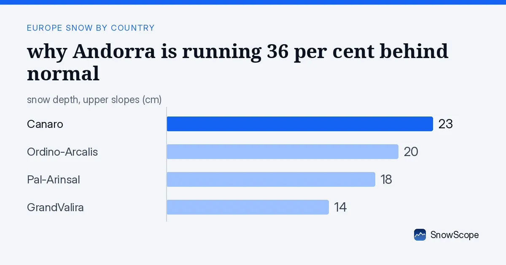
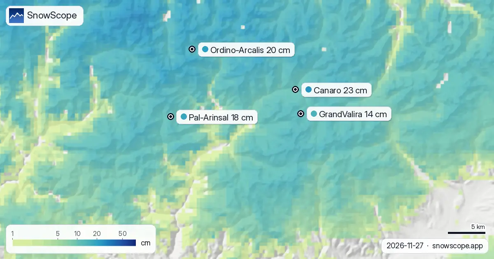

Canaro has 23 cm: why Andorra is running 36 per cent behind normal
Canaro sits at 23 cm of snow today, which is only 64 per cent of what the mountains usually hold by this date. The past three days brought 16 cm across the resort, yet Andorra remains a third short of normal—a reminder that early-season snow is thin and fragile.
See the live snow forecast for Canaro in the SnowScope appSnow depth, powder alerts and the 3D map, free.
Why Canaro lags behind normal
Snow depth at Canaro tells a clear story. At 23 cm, the resort is 13 cm below the November average of 36 cm. This shortfall reflects two things: the season arrived late, and snow cover across Andorra only began to build in the past week. A week ago, Canaro held almost no snow; today it carries just two-thirds of the water it should store at this time of year.
The comparison matters for reservoir managers and water planners downstream. When snow arrives late and runs thin, the spring melt feeds rivers later and with less volume. Right now, Andorra's highest peaks store about 10 cm of snow on average above 2500 m, but the lower slopes remain largely bare.
| Resort | Today | Normal for the date | Share of normal |
|---|---|---|---|
| Canaro | 23 cm | 36 cm | 64 % |
| Ordino-Arcalis | 20 cm | 22 cm | 91 % |
| Pal-Arinsal | 18 cm | 20 cm | 90 % |
| GrandValira | 14 cm | 16 cm | 88 % |

How Andorra stacks against normal
All four Andorran resorts are short of their usual November depths. Ordino-Arcalis holds 20 cm against a typical 22 cm, Pal-Arinsal has 18 cm versus 20 cm, and GrandValira sits at 14 cm instead of 16 cm. Only Ordino-Arcalis is nearly even; the others lag by 10 to 20 per cent.
Across the country, 84 per cent of the mapped area now has snow cover—a dramatic jump from just five per cent a week ago. That rapid growth masks a deeper issue: the snow pack is thin and concentrated at high altitude. Below 2000 m, most slopes are bare. The snow line sits at 1600 m, leaving the lower resorts vulnerable to any thaw.

What the next three days will bring
Fresh snow will be modest. Canaro should see only 1 cm in the next three days, Ordino-Arcalis 2 cm, and the lower resorts around 1 cm each. The snowiest day ahead is 3 December, with 2 cm possible across parts of Andorra. This trickle will not close the gap to normal.
The longer view—days 8 to 14 ahead—hints at more substantial snow, with up to 18 cm possible. That window offers a chance to build the pack, but until then Andorra will remain where it is now: lean, early-season snow clinging to the high peaks.
Snow depth by altitude
Elevation shapes everything right now. Above 2500 m, snow averages 10 cm and covers every slope. Between 2000 and 2500 m, it averages 9 cm and is nearly complete. But the story breaks down lower: between 1500 and 2000 m, only 4 cm lies on 86 per cent of the area, and below 1500 m, bare ground dominates with just 6 per cent white cover.
For skiers, this means riding on thin snow at mid-slopes and finding rock and vegetation underneath. The upper peaks offer the safest ground, but depths are still modest. Each centimetre counts when the base is this fragile.
Where to find the best snow now
Canaro leads Andorra with 23 cm, holding its edge thanks to 16 cm of new snow in the past three days and its height of 2500 m. Ordino-Arcalis follows at 20 cm and sits higher at 2626 m; it also received 20 cm of fresh snow over three days, making it competitive. The Andorran peaks as a group received up to 20 cm in that period, so the high terrain is where the water lies.
GrandValira, the lowest of the four, holds only 14 cm. It will be the last to firm up and the first to suffer if temperatures rise. Pal-Arinsal, at 18 cm, falls between the two leaders and the valley resort.
The week that built the base
One week ago, Andorra had almost no snow. By 25 November, the mountains held 420 km² of white—a leap driven by a band of storms that crossed the region. Snow cover shrank slightly to 400 km² by 26 November as the system eased, then settled at 370 km² today as some snow consolidated or melted at lower elevations.
Canaro held steady near the top of that trend, dipping and recovering as the weather shifted. This volatility is normal for November: early-season snow is loosely bonded and sensitive to small temperature changes. The good news is that cold air is in place. The challenge is that there is not much snow yet to protect.
Tips for skiers
- Stick to slopes above 2000 m where snow is continuous. Below that height, bare patches and rocks are common, and snow is thin.
- Canaro and Ordino-Arcalis offer the deepest and most stable bases; plan runs on their upper terrain first.
- Early season means weak bonding and variable stability. Check the official avalanche bulletin before leaving marked runs.
- Expect melt during warm days, especially on south-facing slopes and below 2000 m. Ride early and high.
- Watch the forecast for the week of 5–11 December; if 18 cm arrives as the range suggests, the pack will strengthen quickly.
About these numbers
Resort snow depths are the deepest snow on the resort's upper slopes on the date shown; they are estimates for an area, not a measurement at one point. Forecasts can change. Always read the official avalanche bulletin before going off-piste.
Cite this report
For research, teaching or the press: the numbers and charts are free to reuse under CC BY 4.0 with this citation.
SnowScope (2026), Canaro has 23 cm: why Andorra is running 36 per cent behind normal, https://snowscope.app/blog/en/2026/11/andorra-snow-behind-normal-27-november-2026.html, accessed 2026-11-27
SnowScope (Atlas Labs). (2026, November 27). Canaro has 23 cm: why Andorra is running 36 per cent behind normal. SnowScope snow reports. https://snowscope.app/blog/en/2026/11/andorra-snow-behind-normal-27-november-2026.html
BibTeX
@misc{snowscope2026andorrasnowbehindnormal2,
author = {{SnowScope (Atlas Labs)}},
title = {Canaro has 23 cm: why Andorra is running 36 per cent behind normal},
year = {2026},
month = nov,
howpublished = {\url{https://snowscope.app/blog/en/2026/11/andorra-snow-behind-normal-27-november-2026.html}},
note = {Published 2026-11-27 11:58 UTC; accessed 2026-11-27}
}· CC BY 4.0 · Methods, data and tools →
Canaro: snow and temperature by height, this winter vs last (tools) →
Follow Canaro
Free: a message when fresh snow is coming, and the forecast every morning.
More snow reports

Savin Kuk above Žabljak picked up 22 cm of snow from 13 to 19 November and still has 6 cm today. Kolašin 1450 and 1600 are bare. The week day by day, and the next chances.

Up to 30 cm of snow fell on northern Velebit and Bjelolasica on Friday 13 November 2026. By Tuesday it was gone. Day by day, what the mountains kept, and when snow comes back.

Only Borovets and Bansko have a trace of snow at the top today, 2 cm each. A week ago Borovets had 11 cm. Day by day, and the one snowy day in the forecast.